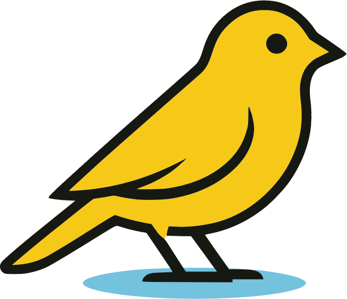

Canary Wallet
◉ Private Bitcoin monitoring
Know when your bitcoin moves.
Watch-only alerts from your own node. Your private keys stay with you.
Runs on
Umbrel
Start9
myNode
or
Canary Cloud
9:41
Incoming: +0.0125 BTC
Cold storage · 1 confirmation
now
Outgoing: −0.5000 BTC
Savings · broadcast
2m